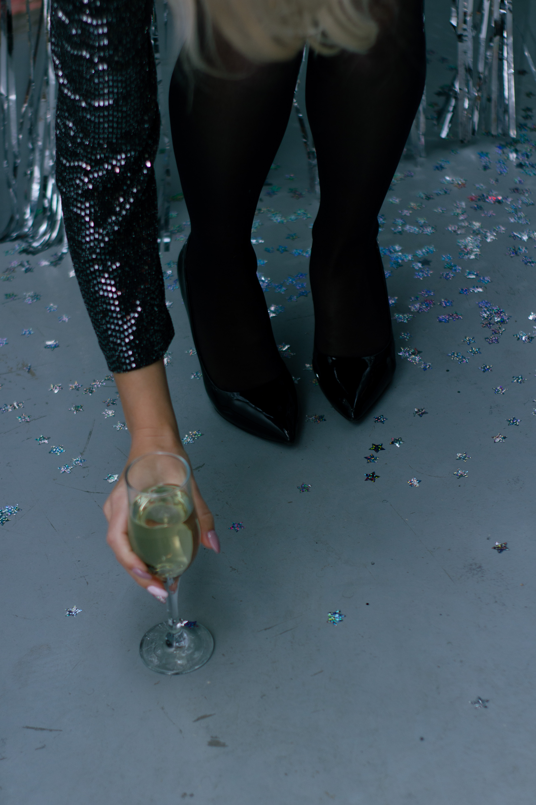

S4E29
01:13
Jan 28, 2022
停更声明

S4E28
1:06:40
Dec 30, 2021
S4 E28 又是一年，感谢有你 ｜ 小声喧哗年终特别节目
S4E27
1:05:58
Nov 23, 2021
S4 E27「沙丘」：生态学，致幻剂与白人救世主
S4E26
1:02:53
Nov 02, 2021
S4 E26 肾，小说，和一场全网大战
S4E25
55:07
Oct 13, 2021
S4 E25 黑寡妇和哈莉·奎茵，花瓶角色的自我觉醒
S4E24
1:05:07
Oct 02, 2021
S4 E24 「尚气」：亚裔漫威英雄的突破与局限
S4E23
41:57
Sep 20, 2021
S4 E23 时间穿越（下）：「星际穿越」里温柔的相对论
S4E22
42:50
Sep 20, 2021
S4 E22 时间穿越（中）：薛定谔的「洛基」
S4E21
33:28
Sep 20, 2021
S4 E21 时间穿越（上）：「信条」和乱跑的时间箭头
S4E20
1:09:32
Sep 14, 2021
S4 E20 「英文系主任」的写实和荒诞：兵荒马乱中的亚裔女教授们
S4E20
1:06:52
Sep 03, 2021
[重发] 在德州最严苛的堕胎法上路之际，回顾和纪念大法官金斯伯格
S4E19
47:47
Aug 22, 2021
S4 E19 当「Rick and Morty」第五季无休止地自我重复，虚无主义被用到秃噜皮｜RM入侵播客宇宙计划
S4E18
1:02:50
Aug 16, 2021
S4 E18 被囚禁和被解放的小甜甜布兰妮
S4E17
44:01
Aug 11, 2021
S4 E17 「东城梦魇」：谋杀之外的小镇困境
S4E16
1:01:23
Jul 23, 2021
S4 E16 小声喧哗X城市罐头：「身在高地」里载歌载舞的士绅化寓言
56:41
Jul 20, 2021
[重发] S3 E4 从《爆炸新闻》到韦恩斯坦：我们走了多远？
S4E15
59:36
Jul 01, 2021
S4 E15 "如此的环境下，这是大家的胜利”——2021上海国际电影节
S4E14
59:49
Jun 25, 2021
S4 E14 在2021年重看「指环王」：“只可以死去一点点”
S4E13
50:50
Jun 18, 2021
S4 E13 对谈「山河令」编剧小初——“你的灵魂一定有个知己在等你”
S4E12
38:27
Jun 13, 2021
S4 E12 「库伊拉」：恃靓行凶的新反派
← 2021
小声喧哗 Loud Murmurs
Archive
Posts
Episodes
Typlog
About
Terms


![[重发] 在德州最严苛的堕胎法上路之际，回顾和纪念大法官金斯伯格](../jpg/8369343286_25111fe11.jpg?x-oss-process=style/ss)


![[重发] S3 E4 从《爆炸新闻》到韦恩斯坦：我们走了多远？](https://images.unsplash.com/photo-1595211100424-915490b45397?ixlib=rb-1.2.1&q=85&fm=jpg&cs=srgb&ixid=MnwzNjMyMnwwfDF8c2VhcmNofDN8fG1ldG9vfGVufDB8fHx8MTYyNjgwMTEzMg&fit=crop&crop=faces&w=420&h=420)